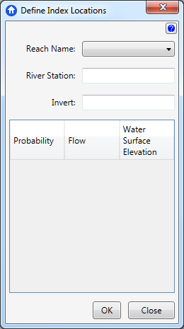
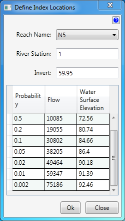

Index Location Editor
The Index Location Editor provides a way to edit the damage reach index points.

- Select the Reach Name from the Define Index Locations window.
- Enter the River Station number.
- Enter the Invert value.
- The form will provide eight rows. Enter the corresponding data for that particular reach and station.
- In order to create as FDA Import File all of the reaches need index location data defined.
Example
